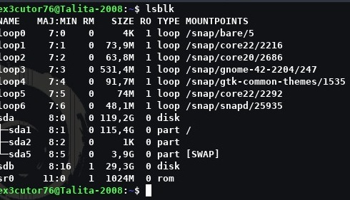

Como formatar um pen driver no Terminal
Sabe existem 2 formas de formatar um pen drive e bem você que escolhe e essas formas são:
Instalar o gparted (Opção gráfica e mais recomendável se você não quiser passar sufoco)
A parte via texto mesmo (No caso comandos)
Para instalar o gparted use: sudo apt install gparted
Tutorial para formatar um pen driver:
Comando usado: lsblk

O primeiro passo é saber onde está o pen drive e aqui no meu caso é o sdb, e bem pode depender qual for o seu
algumas vezes ele até pode aparecer como sdb1 ou sdb2 ou até igual o meu que foi sdb e bem agora que sabemos um
pequeno aviso: Não tente formatar o sda, afinal ele é seu HD ou SSD que fique avisado.
Comando usado: sudo wipefs -a /dev/sdb

Bem agora precisamos apagar as assinaturas antigas de sistemas operacionais ou até lixo eletrônico e etc.
Comando usado: sudo fdisk /dev/sdb

Bem agora por aqui temos que entrar no fdisk para poder resolver o problema.
Preste bem atenção na ordem!!
o
n
p
clique em enter 2 vezes
t
c
w
E se caso não entendeu nada aqui vai explicação:
o = Criar nova tabela MBR
n = nova partição
p = primária
1 = número de partição
Os dois enter é basicamente pra ser o padrão.
t = mudar tipo
c = FAT32 (No caso o padrão)
w = gravar e sair
E bem é assim que vai aparecer pra você:

Comando usado: sudo mkfs.vfat -F32 /dev/sdb1

E prontinho formatado com sucesso e aparecend no thunar e sim eu tive que colocar sdb1 porque o
mkfs meio que rejeitava algumas coisas, mas no final tudo deu certo
Mas olha se caso não quiser quebrar a cabeça por causa desses comandos, só instalar o gparted.